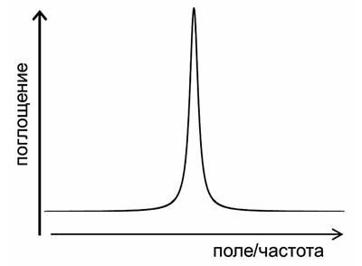
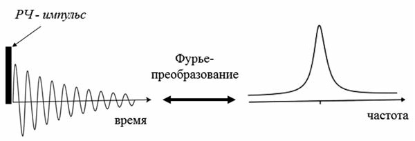
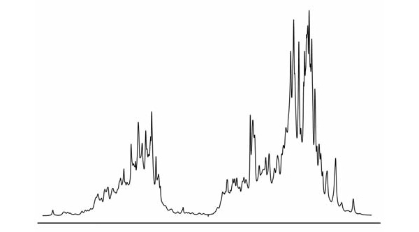

Алексей Крушельницкий,
доктор физ.-мат. наук, Университет Мартина Лютера (Халле, Германия)
«Троицкий вариант» №9(128), 07 мая 2013 года
доктор физ.-мат. наук, Университет Мартина Лютера (Халле, Германия)
«Троицкий вариант» №9(128), 07 мая 2013 года
ЯМР для самых маленьких,
или как 10 кругов ада запихнуть в сайт
1. Суть явления
Прежде всего, надо заметить, что хотя в названии этого явления присутствует слово «ядерный», к ядерной физике ЯМР никакого отношения не имеет и с радиоактивностью никак не связан.
Если говорить о строгом описании, то без законов квантовой механики никак не обойтись.
Согласно этим законам, энергия взаимодействия магнитного ядра с внешним магнитным полем может принимать только несколько дискретных значений.
Если облучать магнитные ядра переменным магнитным полем, частота которого соответствует разнице между этими дискретными энергетическими уровнями, выраженной в частотных единицах, то магнитные ядра начинают переходить с одного уровня на другой, при этом поглощая энергию переменного поля.
В этом и состоит явление магнитного резонанса. Это объяснение формально правильное, но не очень наглядное.
Есть другое объяснение, без квантовой механики.
Магнитное ядро можно представить как электрически заряженный шарик, вращающийся вокруг своей оси (хотя, строго говоря, это не так).
Согласно законам электродинамики, вращение заряда приводит к появлению магнитного поля, т. е. магнитного момента ядра, который направлен вдоль оси вращения.
Если этот магнитный момент поместить в постоянное внешнее поле, то вектор этого момента начинает прецессировать, т. е. вращаться вокруг направления внешнего поля.
Таким же образом прецессирует (вращается) вокруг вертикали ось юлы, если ее раскрутить не строго вертикально, а под некоторым углом.
В этом случае роль магнитного поля играет сила гравитации.
Частота прецессии определяется как свойствами ядра, так и силой магнитного поля: чем сильнее поле, тем выше частота. Затем, если кроме постоянного внешнего магнитного поля на ядро будет воздействовать переменное магнитное поле, то ядро начинает взаимодействовать с этим полем — оно как бы сильнее раскачивает ядро, амплитуда прецессии увеличивается, и ядро поглощает энергию переменного поля. Однако это будет происходить только при условии резонанса, т. е. совпадения частоты прецессии и частоты внешнего переменного поля. Это похоже на классический пример из школьной физики — марширующие по мосту солдаты. Если частота шага совпадает с частотой собственных колебаний моста, то мост раскачивается всё сильнее и сильнее. Экспериментально это явление проявляется в зависимости поглощения переменного поля от его частоты. В момент резонанса поглощение резко возрастает, а простейший спектр магнитного резонанса выглядит вот так:
Частота прецессии определяется как свойствами ядра, так и силой магнитного поля: чем сильнее поле, тем выше частота. Затем, если кроме постоянного внешнего магнитного поля на ядро будет воздействовать переменное магнитное поле, то ядро начинает взаимодействовать с этим полем — оно как бы сильнее раскачивает ядро, амплитуда прецессии увеличивается, и ядро поглощает энергию переменного поля. Однако это будет происходить только при условии резонанса, т. е. совпадения частоты прецессии и частоты внешнего переменного поля. Это похоже на классический пример из школьной физики — марширующие по мосту солдаты. Если частота шага совпадает с частотой собственных колебаний моста, то мост раскачивается всё сильнее и сильнее. Экспериментально это явление проявляется в зависимости поглощения переменного поля от его частоты. В момент резонанса поглощение резко возрастает, а простейший спектр магнитного резонанса выглядит вот так:

2. Фурье-спектроскопия
Первые ЯМР-спектрометры работали именно так, как описано выше — образец помещался в постоянное магнитное поле, и на него непрерывно подавалось радиочастотное излучение.
Затем плавно менялась либо частота переменного поля, либо напряженность постоянного магнитного поля.
Поглощение энергии переменного поля регистрировалось радиочастотным мостом, сигнал от которого выводился на самописец или осциллограф. Но этот способ регистрации сигнала уже давно не применяется.
В современных ЯМР-спектрометрах спектр записывается с помощью импульсов. Магнитные моменты ядер возбуждаются коротким мощным импульсом, после которого регистрируется сигнал, наводимый в РЧ-катушке свободно прецессирующими магнитными моментами.
Этот сигнал постепенно спадает к нулю по мере возвращения магнитных моментов в состояние равновесия (этот процесс называется магнитной релаксацией). Спектр ЯМР получается из этого сигнала с помощью Фурье-преобразования.
Это стандартная математическая процедура, позволяющая раскладывать любой сигнал на частотные гармоники и таким образом получать частотный спектр этого сигнала.
Этот способ записи спектра позволяет значительно понизить уровень шумов и проводить эксперименты намного быстрее.

Один возбуждающий импульс для записи спектра — это самый простейший ЯМР-эксперимент.
Однако таких импульсов, разной длительности, амплитуды, с разными задержками между ними и т. п., в эксперименте может быть много, в зависимости от того, какие именно манипуляции исследователю надо провести с системой ядерных магнитных моментов.
Тем не менее, практически все эти импульсные последовательности оканчиваются одним и тем же — записью сигнала свободной прецессии с последующим Фурье-преобразованием.
3. Магнитные взаимодействия в веществе
Сам по себе магнитный резонанс остался бы не более чем занятным физическим явлением, если бы не магнитные взаимодействия ядер друг с другом и с электронной оболочкой молекулы. Эти взаимодействия влияют на параметры резонанса, и с их помощью методом ЯМР можно получать разнообразную информацию о свойствах молекул — их ориентации, пространственной структуре (конформации), межмолекулярных взаимодействиях, химическом обмене, вращательной и трансляционной динамике.
Благодаря этому ЯМР превратился в очень мощный инструмент исследования веществ на молекулярном уровне, который широко применяется не только в физике, но главным образом в химии и молекулярной биологии.
В качестве примера одного из таких взаимодействий можно привести так называемый химический сдвиг.
Суть его в следующем: электронная оболочка молекулы откликается на внешнее магнитное поле и старается его экранировать — частичное экранирование магнитного поля происходит во всех диамагнитных веществах.
Это означает, что магнитное поле в молекуле будет отличаться от внешнего магнитного поля на очень небольшую величину, которая и называется химическим сдвигом.
Однако свойства электронной оболочки в разных частях молекулы разные, и химический сдвиг тоже разный. Соответственно, условия резонанса для ядер в разных частях молекулы тоже будут отличаться.
Это позволяет различать в спектре химически неэквивалентные ядра.
Например, если мы возьмем спектр ядер водорода (протонов) чистой воды, то в нем будет только одна линия, поскольку оба протона в молекуле H2O совершенно одинаковы.
Но для метилового спирта СН3ОН в спектре будет уже две линии (если пренебречь другими магнитными взаимодействиями), поскольку тут есть два типа протонов — протоны метильной группы СН3 и протон, связанный с атомом кислорода.
По мере усложнения молекул число линий будет увеличиваться, и если мы возьмем такую большую и сложную молекулу, как белок, то в этом случае спектр будет выглядеть примерно так:

4. Магнитные ядра
ЯМР можно наблюдать на разных ядрах, но надо сказать, что далеко не все ядра имеют магнитный момент.
Часто бывает так, что некоторые изотопы имеют магнитный момент, а другие изотопы того же самого ядра — нет.
Всего существует более сотни изотопов различных химических элементов, имеющих магнитные ядра, однако в исследованиях обычно используется не более 1520 магнитных ядер, всё остальное — экзотика.
Для каждого ядра есть свое характерное соотношение магнитного поля и частоты прецессии, называемое гиромагнитным отношением.
Для всех ядер эти отношения известны.
По ним можно подобрать частоту, на которой при данном магнитном поле будет наблюдаться сигнал от нужных исследователю ядер.
Самые важные для ЯМР ядра — это протоны. Их больше всего в природе, и они имеют очень высокую чувствительность. Для химии и биологии очень важны ядра углерода, азота и кислорода, но с ними ученым не очень повезло: наиболее распространенные изотопы углерода и кислорода, 12С и 16О, магнитного момента не имеют, у природного изотопа азота 14N момент есть, но он по ряду причин для экспериментов очень неудобен. Есть изотопы 13С, 15N и 17О, которые подходят для ЯМР-экспериментов, но их природное содержание очень низкое, а чувствительность очень маленькая по сравнению с протонами. Поэтому часто для ЯМР-исследований готовят специальные изотопно-обогащенные образцы, в которых природный изотоп того или иного ядра замещен на тот, который нужен для экспериментов. В большинстве случаев эта процедура весьма непростая и недешевая, но иногда это единственная возможность получить необходимую информацию.
Самые важные для ЯМР ядра — это протоны. Их больше всего в природе, и они имеют очень высокую чувствительность. Для химии и биологии очень важны ядра углерода, азота и кислорода, но с ними ученым не очень повезло: наиболее распространенные изотопы углерода и кислорода, 12С и 16О, магнитного момента не имеют, у природного изотопа азота 14N момент есть, но он по ряду причин для экспериментов очень неудобен. Есть изотопы 13С, 15N и 17О, которые подходят для ЯМР-экспериментов, но их природное содержание очень низкое, а чувствительность очень маленькая по сравнению с протонами. Поэтому часто для ЯМР-исследований готовят специальные изотопно-обогащенные образцы, в которых природный изотоп того или иного ядра замещен на тот, который нужен для экспериментов. В большинстве случаев эта процедура весьма непростая и недешевая, но иногда это единственная возможность получить необходимую информацию.
5. Электронный парамагнитный и квадрупольный резонанс
не атомных ядер, а электронной оболочки атома.
ЭПР может наблюдаться только в тех молекулах или химических группах, электронная оболочка которых содержит так называемый неспаренный электрон, тогда оболочка имеет ненулевой магнитный момент.
Такие вещества называются парамагнетиками. ЭПР, как и ЯМР, также применяется для исследований различных структурно-динамических свойств веществ на молекулярном уровне, но его область использования существенно уже.
Это связано в основном с тем, что большинство молекул, особенно в живой природе, не содержит неспаренных электронов.
В некоторых случаях можно использовать так называемый парамагнитный зонд, т. е. химическую группу с неспаренным электроном, которая связывается с исследуемой молекулой.
Но такой подход имеет очевидные недостатки, которые ограничивают возможности этого метода. Кроме того, в ЭПР нет такого высокого спектрального разрешения (т. е. возможности отличить в спектре одну линию от другой), как в ЯМР.
Объяснить «на пальцах» природу ЯКР труднее всего. Некоторые ядра обладают так называемым электрическим квадрупольным моментом. Этот момент характеризует отклонение распределения электрического заряда ядра от сферической симметрии. Взаимодействие этого момента с градиентом электрического поля, создаваемого кристаллической структурой вещества, приводит к расщеплению энергетических уровней ядра. В этом случае можно наблюдать резонанс на частоте, соответствующей переходам между этими уровнями. В отличие от ЯМР и ЭПР, для ЯКР не нужно внешнего магнитного поля, поскольку расщепление уровней происходит без него. ЯКР также используется для исследования веществ, но область его применения еще уже, чем у ЭПР.
Объяснить «на пальцах» природу ЯКР труднее всего. Некоторые ядра обладают так называемым электрическим квадрупольным моментом. Этот момент характеризует отклонение распределения электрического заряда ядра от сферической симметрии. Взаимодействие этого момента с градиентом электрического поля, создаваемого кристаллической структурой вещества, приводит к расщеплению энергетических уровней ядра. В этом случае можно наблюдать резонанс на частоте, соответствующей переходам между этими уровнями. В отличие от ЯМР и ЭПР, для ЯКР не нужно внешнего магнитного поля, поскольку расщепление уровней происходит без него. ЯКР также используется для исследования веществ, но область его применения еще уже, чем у ЭПР.
6. Преимущества и недостатки ЯМР
ЯМР — самый мощный и информативный метод исследования молекул.
Строго говоря, это не один метод, это большое число разнообразных типов экспериментов, т. е. импульсных последовательностей.
Хотя все они основаны на явлении ЯМР, но каждый из этих экспериментов предназначен для получения какой-то конкретной специфической информации.
Число этих экспериментов измеряется многими десятками, если не сотнями. Теоретически ЯМР может если не всё, то почти всё, что могут все остальные экспериментальные методы исследования структуры и динамики молекул, хотя практически это выполнимо, конечно, далеко не всегда.
Одно из основных достоинств ЯМР в том, что, с одной стороны, его природные зонды, т. е. магнитные ядра, распределены по всей молекуле, а с другой стороны, он позволяет отличить эти ядра друг от друга и получать пространственно-селективные данные о свойствах молекулы.
Почти все остальные методы дают информацию либо усредненную по всей молекуле, либо только о какой-то одной ее части.
Основных недостатков у ЯМР два. Во-первых, это низкая чувствительность по сравнению с большинством других экспериментальных методов (оптическая спектроскопия, флюоресценция, ЭПР и т. п.). Это приводит к тому, что для усреднения шумов сигнал нужно накапливать долгое время. В некоторых случаях ЯМР-эксперимент может проводиться в течение даже нескольких недель. Во-вторых, это его дороговизна. ЯМР-спектрометры — одни из самых дорогих научных приборов, их стоимость измеряется как минимум сотнями тысяч долларов, а самые дорогие спектрометры стоят несколько миллионов. Далеко не все лаборатории, особенно в России, могут позволить себе иметь такое научное оборудование.
Основных недостатков у ЯМР два. Во-первых, это низкая чувствительность по сравнению с большинством других экспериментальных методов (оптическая спектроскопия, флюоресценция, ЭПР и т. п.). Это приводит к тому, что для усреднения шумов сигнал нужно накапливать долгое время. В некоторых случаях ЯМР-эксперимент может проводиться в течение даже нескольких недель. Во-вторых, это его дороговизна. ЯМР-спектрометры — одни из самых дорогих научных приборов, их стоимость измеряется как минимум сотнями тысяч долларов, а самые дорогие спектрометры стоят несколько миллионов. Далеко не все лаборатории, особенно в России, могут позволить себе иметь такое научное оборудование.